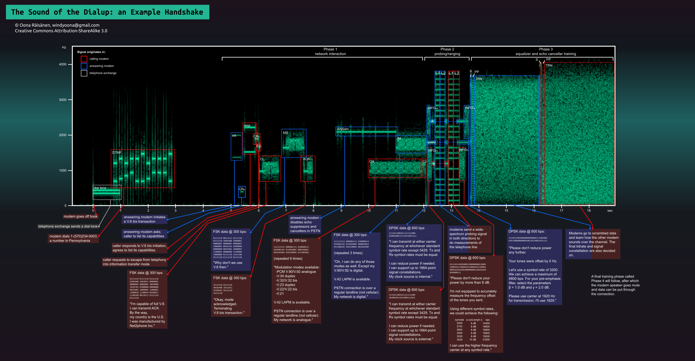

Identify and acknowledge privilege, situate yourself in an intersectional matrix. Speak a developing language of the global left.
Identify kinship, situate one other in a web of familial ties that expand creatively outwards.
Two machines ascertain each other's capabilities, find a shared language, probing the communication channel for potential problems.
Trust flows from protocols by which we establish that we are talking the same language, that our communication is being received as intended.
Trust is about intimacy and vulnerability. Trust allows us to reveal ourselves. Trust implies a fair exchange.
UX interfaces seek to lull us into a sense of security, a panacea of trust, a green lock in the corner of the eye. There is no fair exchange with the custodians of our data.
How can we re-establish reciprocity of trust? What does procedural trust look like? Under what conditions would you share your data with me?
A period of researching different codes of creating trust, both theoretical and with different focus groups.
Seek to translate those codes to a technological domain as an interactive installation.
Imagine / prototype tools for alerting people of a breach of trust, or providing a haptic or sensory warning when about to share data in an unsafe manner. A transferable credit of trust in the hands of the people.